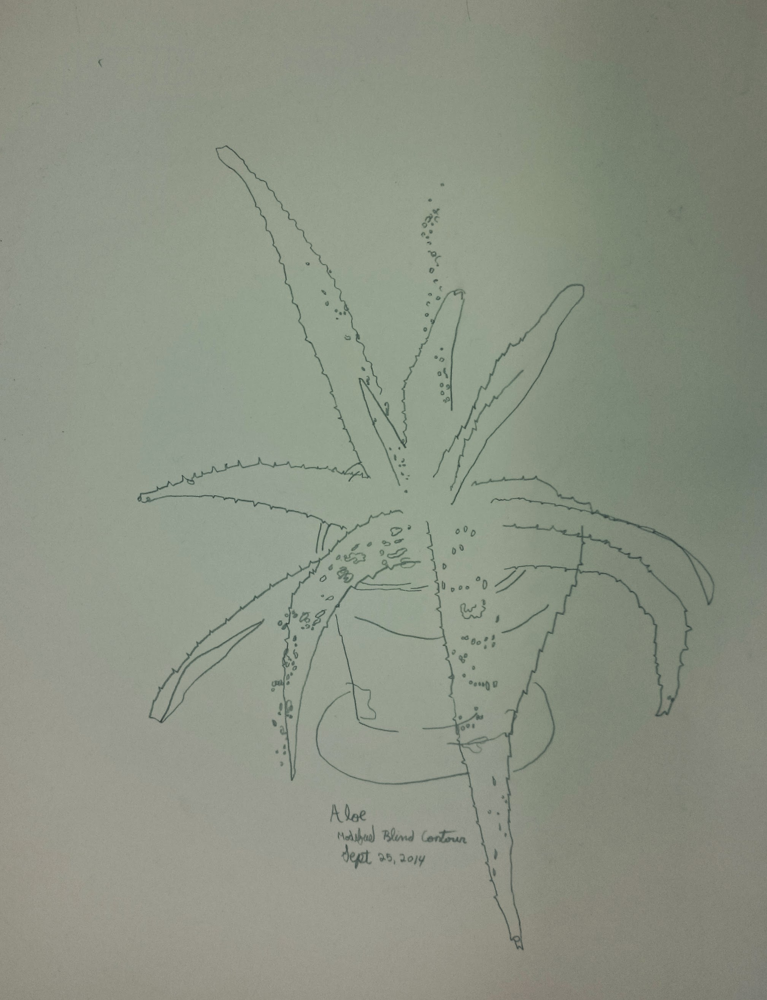

August 14, 2016
A blind contour drawing is done by keeping one's eyes on the subject and not glancing at the paper. The idea is to concentrate on the minutiae and to be less concerned with the result. This drawing works well as the important parts of the plant are captured and less essential pieces are left to be filled in by the viewer.
Look at the relationship between the markings on the leaves and the edges: even though some of the dots wander outside the lines, the relationship still makes a certain amount of sense. Likewise, the shape of the pot is rough, but the scale and size are true enough and counter balance the detail given to the plant.
Trying to accurately capture tone leaves some of my work feeling too busy. The sparseness of this drawing allows the important parts to pop and draws the viewers eye to the more interesting detail I was able to capture. This style of drawing helps train the eye to look for important parts of the subject.
So what do I enjoy about this? Detail. Minutiae. Relationships. Prioritization. Sparseness.
